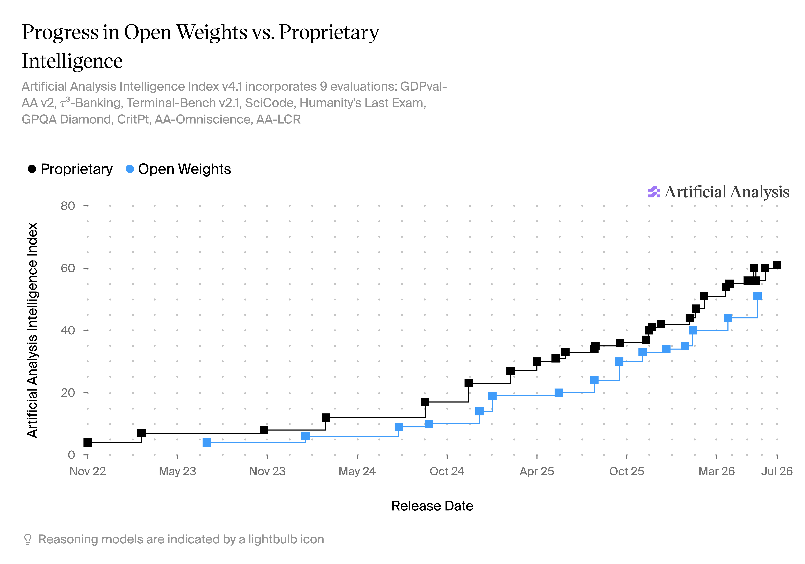

And the fall of commercial AI?
Artificial Intelligence (AI) has dominated the technology and mainstream media headlines for years. Names like OpenAI and ChatGPT have become household terms. But the dominant position of these tech giants, known as frontier labs, led by OpenAI and Anthropic, who have grown their revenues faster than almost any tech company before them, is now under threat from so-called open weights models — predominantly emanating from China.
This is the story of open weights AI models: what they are, where they come from, and why they may disrupt the leading frontier labs before those companies have a chance to fully capitalise on the technology they spent so much money developing.
But to understand how we got here—and this is a story with more twists, reversals and ironies than you might expect—we need to start our journey a few years earlier, in the run-up to GPT-3 and ChatGPT, when this technology first began making headlines.
ChatGPT looked like an overnight success. In truth it was seven years in the making — walk the timeline, one milestone at a time.
OpenAI was founded in December 2015 by Elon Musk, Sam Altman and others, out of a worry that recent advances in Artificial Intelligence might lead to what is known as Artificial General Intelligence (or AGI). Google had recently acquired DeepMind, a leading research lab that was considered the favourite for developing AGI first. The OpenAI founders considered that AGI shouldn’t be owned by a single profit-driven company, creating the company as a non-profit lab, backed by ~$1 billion in pledges, chartered to benefit humanity and share its research openly.
The early days of OpenAI involved research across a wide range of fronts, including Gym their reinforcement-learning research, where they taught a simulated robot to backflip from human feedback. They also created bots that competed in online computer games.
In mid 2018, OpenAI published GPT-1, their first "Generative Pre-Trained Transformer" introduced in the paper "Improving Language Understanding by Generative Pre-Training". More commonly known as a Large Language Model (LLM), it had ~117 million parameters and demonstrated a now-foundational recipe: pre-train a model on a large text corpus, then fine-tune it on specific tasks. Modest by today's standards, it proved the approach that GPT-2, GPT-3 and ChatGPT would scale up. The GPT-1 architecture was based directly on Google's Transformer and its self-attention mechanism, which was published the year before in the landmark paper "Attention Is All You Need". Ironically the core invention that underpins OpenAI's flagship GPT line of models was published by Google - the very company whose AI dominance had spurred OpenAI's founding.
While GPT-1 was an impressive model in its own right, OpenAI continued to research a wide range of AI applications, and as a result their compute capacity was spread thin. A key discovery that ultimately caused the company to divert their attention and compute towards developing GPT models was the scaling law - the empirical finding that a language model's performance improves predictably as you scale up model size (parameters), the training data and compute (for training). With this finding, OpenAI scaled up across all three dimensions, GPT-1 had 117 million parameters, GPT-2 had up to 1.5 billion. GPT-2 was so fluent that OpenAI initially held back the full model, citing misuse fears, before releasing it in stages. Notably as a non-profit they couldn't raise the cash needed to fund the power and compute for ever-larger training runs. As a result it shifted to a “capped-profit” structure and took a $1bn investment from Microsoft.
OpenAI released GPT-3 with 175 billion parameters and a public API. A single model that could now write, summarise, translate and code with no task-specific training. The training run for this model was estimated to cost several million dollars. The new capped profit structure allowed OpenAI to start monetising the AI models they were producing, with the argument that the pursuit of AGI requires enormous capital and compute, hence the need to create commercially successful products. In tandem, OpenAI was becoming more closed. GPT-1 was fully open from the outset (paper, model weights and code), whereas GPT-2 was released in stages over a 9 month period. Whereas GPT-3 was entirely closed, with none of the technical details released. Furthermore Microsoft secured an exclusive license to the underlying model.
In the year that followed, OpenAI released a succession of commercial products, including DALL·E that turned text into images and Codex which powered GitHub's Copilot, an AI assistant that helps software engineers write code. Copilot was their first genuinely mainstream commercial success, that gradually became a standard part of the developers toolkit over the next couple of years.
Another important development happened the year after, with OpenAI's safety and alignment team developing InstructGPT which trained language models to follow instructions based on human feedback. Prior to that, models would often emit offensive or dangerous material from their now vast training dataset. While the technique was safety focussed, a side-effect of their approach was that it actually made talking with GPT models more pleasant and the output fundamentally more useful. With this final advancement, OpenAI wrapped their GPT-3.5 in a simple chat interface, and tentatively launched it as a "research preview" later that year. They initially expected a few thousand users and allocated server capacity for around 100,000 users. It reached ~1 million users in five days and ~100 million within two months and become the fastest-growing consumer app of its time.
The upshot
In just seven years, OpenAI had become almost the opposite of what it set out to be. Founded as a non-profit, it had gradually closed its doors with each successive model and product release, with its inner workings undisclosed and ultimately licensed to Microsoft. The overall mission - the pursuit of safe AGI to benefit humanity - hadn't changed, but the means had changed beyond recognition. But finally, almost by accident, the runaway success of ChatGPT suddenly turned OpenAI into a household name and lit the fuse of the AI 'arms race' that followed. The year ended with Google CEO Sundar Pichai declaring an internal "code red", having realised a rival had beaten it to market with its own foundational technology; AI was now a strategic priority.
While the Code Red signalled that Google leadership thought OpenAI was winning the race, a highly prescient leaked memo pointed out that they were perhaps looking at the wrong race altogether.
On 4 May 2023, a Google engineer’s internal memo was leaked to the analyst newsletter SemiAnalysis, carrying the punchy title "We Have No Moat, And Neither Does OpenAI".
A moat, in investor speak, is a durable competitive advantage that protects a company from competitors. While OpenAI, Google and now Anthropic (spun out from OpenAI in 2021) were pouring money and resources into scaling their AI efforts, the open source community were rapidly gaining ground, based on the surprise leak of LLaMA, a model developed by Meta.
The memo generated interest at the time of writing, but soon faded from view. OpenAI had just launched GPT-4, venture capital was flooding into frontier labs, and training runs were already costing hundreds of millions of dollars. The idea that a loose community of open-weight developers could keep pace looked quite unlikely. Three years later, that memo reads less like an opinion and more like a prediction.
This story is about open weights AI, and LLaMA's somewhat unintentional release was something of a catalyst. But before telling that particular story, let's take a look at what open weights and open source are - the subtle and sometimes controversial differences.
Open source has a very long history in the field of computing, and describes the principle of publishing the source code of applications so that others can review, learn from and modify the code, as well as simply run it themselves. Put simply if an application or utility is open source it means that anyone is free to re-produce and recreate it. Open source is about freedom.
The majority of modern software is open source, giving consumers transparency and freedom from vendor lock-in. Somewhat surprisingly, it is entirely possible to make a commercial success of a business that releases all its software as open source and a great many do.
The GPT series of models are all based on a technique known as deep learning. The models themselves are a massive layered network of nodes and connections with associated parameters, resembling the structure of a human brain. The training process involves showing the model a vast quantity of data (e.g. written text), and training it to replicate the patterns it observes. This involves a vast amount of time and computation as the model gradually adjusts the parameters that form the connection between the nodes across the various layers. Fundamentally the model learns how to perform tasks by observing and mimicking its training data, with this learning 'baked in' to the model weights.
Once model training is complete, the training dataset is no longer needed. The model has learnt the underlying patterns, and trained to exhibit specific behaviours. As a result, using an AI model, through what is known as inference, only needs the model architecture and weights. Incidentally, the inference cost (i.e the cost of using an AI model) is many orders of magnitude less than the training cost.
So how do we apply open source to AI models?
Open source software is built around four key freedoms - the freedom to use, study, modify and share. Access to the model architecture and weights gives you the freedom to use and share, but without having access to the training dataset, it isn't possible to study or easily modify the model.
As of 2026, the vast majority of 'open' AI models share their architecture and weights, but not the details of how they were trained, and as such, they are not open source. As a result, they are described as 'open weights' models to make the distinction clear.
Even though they are not open source, there is still a tremendous amount of value in models being released as open weights. This allows anyone to host and run the model themselves - something which is becoming increasingly important due to geopolitics.
With the open source back story complete, let's return to LLaMA and the 'we have no moat' memo.
Meta has had a long history of AI research, with their lab led by Turing Award winner Yann LeCun. Their team had a deep-rooted open-science culture, genuinely open sourcing their work. Furthermore, Meta didn't intend to monetise their AI developments, their core business has historically been built on advertising and engagement.
In February 2023 Meta released LLaMA 1 (Large Language Model Meta AI) as a research release, with weights available to academics. Notably the smaller 13B parameter model beat the larger 175B parameter GPT-3 on many benchmarks - although OpenAI would release the far more powerful GPT‑4 just weeks later. LLaMA capitalised on earlier research from Google's DeepMind team, demonstrating that smaller models, running on more modest hardware, could be competitive.
But just one week after LLaMA 1 limited research released, the model weights were leaked and became widely available. This put a GPT-3 class model into the hands of everyone. This fuelled an immediate explosion of open innovation; people managed to run the models on a Raspberry Pi and a toaster, someone managed to create a 'no GPU' version that ran on a standard MacBook. Probably one of the most notable developments came from Stanford, their Vicuna model took the LLaMA weights and undertook an additional training run based on 70,000 ChatGPT conversations, creating a model that had conversational quality close to ChatGPT itself. The process of using one model to assist in the training of another is called distillation, and is something we will return to later.
After the leak, Meta took the opposite direction to OpenAI, leaning in and becoming more open. Their next model release, LLaMA 2, just a few months later was accompanied with a permissive licence for commercial use. Although, even that release wasn't fully open source in the strictest of sense, having a special clause that meant companies with 700 million or more monthly active users as of the model's release date needed to request a special commercial license. Basically they were happy for anyone to use it, other than Google, Microsoft, Apple or Amazon!
Meta continued to scale the LLaMA series, and continued to release them openly, with Mark Zuckerberg making this approach explicit in his essay "Open Source AI Is the Path Forward", outlining that openness was good for developers, removing vendor lock-in, good for Meta, citing how Linux is built on open source foundations, and that it is good for the world - making the safety argument, that powerful AGI should be distributed rather than centralised. This inverted OpenAI's justification, who argued that closed and commercial funding was necessary for safe AGI.
Returning to Google's "Code Red" and the "no moat" leak, the Google employee pointed out that while OpenAI, and to a lesser extent Google, were pouring enormous sums of money into training giant models, the open weights approach was demonstrating just how far they could iterate and catch up. It argued that neither company would have a lasting advantage, and no moat, with the open ecosystem always at their heels.
This did nothing to curb OpenAI's (and others) enthusiasm and investment, which only continued to grow in the coming years.
The frontier labs answered the open-weights threat the only way they knew how: by scaling harder, on every axis they could find.
It didn't take long before OpenAI started experiencing competition from commercial competitors. Anthropic was formed in 2021 by a small group of OpenAI staff that left the company due to concerns about the company direction, moving towards closed models and as they saw it making compromises on safety. Anthropic was set up as a direct competitor, but with a much greater emphasis on safety. Their first model, named Claude was released in March 2023, at around the same time that GPT-4 was released and the LLaMA ecosystem was exploding. They were a credible competitor, but it would be another year until their model's performance was a serious threat to OpenAI.
The period from 2023-2024 saw huge investment, and scaling across multiple axes.
Axis 1 — Model size and cost
The first axis was further investment in the original scaling hypothesis, that more compute, bigger models and more data would yield improved performance. This drove estimated training costs steeply upwards: from ~$900 for the original 2017 Transformer, to ~$4m for GPT-3 (2020), ~$12m for Google's PaLM (2022), ~$78m for GPT-4 (2023) — OpenAI's Sam Altman said it in fact exceeded $100m — and as much as ~$191m for Google's Gemini Ultra. Epoch AI projects the largest runs will pass $1bn by 2027.† Training data was also becoming harder to come by, with the datasets including practically every written piece of text available. Additional costs included the creation of specialised and highly curated datasets, used to fine-tune the model behaviour through a technique called Reinforcement Learning from Human Feedback (RLHF).
† Training-run cost figures are estimates derived using the Epoch AI methodology (as reported in the Stanford HAI AI Index 2025). They represent the estimated cost of a single frontier training run and are not official figures released by the model developers. Grok 4 is an estimated figure based on publicly available information rather than a disclosed training cost.
Axis 2 — The context window
While model size (parameters) and training costs were not disclosed, another notable scaling axis was context window size. In order for AI models to create useful and 'intelligent' output, they need to be supplied with large quantities of input data - capturing both the task you want them to undertake, and the context, i.e. important background information that grounds their response.
Over the next couple of years context window sizes grew rapidly, with the earlier models, GPT-3 for example having ~2k tokens (around one A4 page of text), Anthropic's Claude 2 growing to 100k tokens (200 A4 pages), then Google's Gemini 1.5 Pro reaching 1m (2,000 A4 pages). These dramatic increases meant that it was possible for models to ingest entire codebases, or sizeable reports, significantly increasing their usefulness in business settings.
Axis 3 — Reasoning
In 2024 there was a significant new breakthrough, with the discovery of a new scaling dimension, allowing models to 'think' before answering.
With an LLM, when answering a question the output is based on the input data (the context) and the model weights. In 2022 some researchers found they could improve the quality of the output by first asking the LLM to draft or plan out their work before outputting the answer. This encourages the model to break a complex problem into smaller pieces and create a more logical pathway to the final answer.
Frontier labs started to introduce the concept of reasoning into the model architecture itself, with OpenAI o1 (Sept 2024) they used reinforcement learning to create internal chains of thoughts, in order to solve harder problems. This created significant jumps in maths, science and programming. This approach was rapidly adopted by all the other model labs and is now a standard feature. Future innovations allowed models to determine just how long to 'think' before returning a result, allowing cheaper and more rapid answers to simple questions, and more thoughtful (and expensive) answers to more complex challenges.
Reasoning was a key breakthrough. With training costs at astronomical heights ($1bn), it was now possible to improve performance even further by letting the models think longer at runtime.
The real winner: Nvidia
All three scaling axes converged on one input, compute. Bigger models, longer contexts, and inference-time reasoning all consume more compute and require more GPUs (the specialised processors needed to train and run these models). Nvidia, the leading supplier of GPUs, was the main beneficiary of this trend, with its market cap reaching $3-4 trillion, making it the most valuable company in the world throughout this period.
By this point in time it wasn't unreasonable to conclude that OpenAI, Anthropic, Google and other genuinely did have a moat. The financial investments they were making in this technology surely made it impossible for an open source or open weights competitor to catch up?
At the start of 2025, a Chinese lab most people had never heard of changed the maths overnight.
At the beginning of 2025 DeepSeek, a Chinese model lab founded just a couple of years earlier, released their DeepSeek-R1 together with a chat app (as a direct competitor to ChatGPT). Within days their app reached #1 on the US App Store, with an adoption rate that outpaced ChatGPT's release. Notably, the API, app, technical report and model weights all became available together. While the training data wasn't shared, this open weights release was in stark contrast to the US labs approach. The underlying DeepSeek-R1 model matched the performance of o1 on reasoning benchmarks, with an API that was around 30x cheaper for consumers.
This was the pivotal moment, that triggered a short-lived financial shock, Nvidia lost ~$600 billion in market value in a single day, the largest one-day loss in US stock-market history. Ths was not because DeepSeek had overtaken Nvidia, but because investors suddenly questioned whether frontier AI would remain as capital-intensive as previously believed.
While the model itself was open, both the consumer application and API were heavily censored, refusing to answer questions about historical events at Tiananmen Square for example. This wasn't just implemented as a content filtering layer, the training of the model itself had undergone fine-tuning/alignment to Chinese content regulations. However, Perplexity, a US company developing a conversational search engine, were able to remove or reduce this bias by further fine-tuning of the open weights model. Something that would have been entirely impossible with a closed model release.
How did DeepSeek manage to create such a powerful model, and rapidly catch-up with the frontier?
DeepSeek was spun out of HighFlyer, a successful Chinese quantitative hedge fund that had both a long history in machine learning and significant compute capacity for the purposes of modelling financial markets. Initially reporting claimed they had developed this model with a minute budget of just $5m, but this was simply the cost of one training run as reported in their technical papers. The DeepSeek team introduced some novel technical innovations (Multi-head Latent Attention and a refined Mixture-of-Experts architecture) but were not lacking in compute resources or funding.
Another technique they were rumoured to have used to develop their model is known as distillation, where the outputs of one model are used to train another. Shortly after release, OpenAI and Microsoft said they had evidence DeepSeek had used their commercial API for this purposes, violating the terms of service. However, this evidence was never disclosed and the charge remains unproven.
DeepSeek proved that an open weights model could match the closed frontier on its newest capability - reasoning — at a fraction of the cost, challenging the assumption that frontier labs' billions created a lead that could not be closed. The market realised frontier performance might no longer justify frontier economics.
DeepSeek wasn't a one-off. A whole family of open-weights labs was rising fast — and most of it was Chinese.
Throughout 2025 reasoning and long context windows became the foundations for newer techniques, with the narrative shifting from AI to "Agentic AI". The labs were all racing to create models that could operate autonomously, with a technique called 'tool use' allowing them to both supplement their own capability and also take direct actions. Also, coding ability became a key battleground for the frontier labs, emerging as a likely domain where they could start monetising their products.
However, DeepSeek wasn't just a one-off success, there were now a growing family of companies releasing open weights models, with the majority located in China.
Founded in March 2023 by Yang Zhilin (a Carnegie Mellon PhD who worked at Google and Meta) with two Tsinghua classmates, and heavily VC-backed by the likes of Alibaba and Tencent. It made its name with its Kimi assistant's unusually long context window for digesting lengthy documents, and later pushed into agentic coding with its trillion-parameter model, Kimi K2.
Founded in 2019 as a spin-off from Tsinghua University's Knowledge Engineering Group, one of China's most prestigious AI research centres, it built a following through its open-source GLM / ChatGLM ecosystem. They also focused on coding and agentic use cases, to become the first of China's "big-six" model labs to go public, completing an IPO in January 2026.
Developed by Alibaba, one of China's largest cloud hyperscalers, Qwen was designed to complement Alibaba Cloud's offering — much like the Microsoft/OpenAI relationship — driving cloud consumption rather than being a standalone product. Rather than a handful of general-purpose models, Alibaba open-sourced a vast family of use-case-specific models (coding, vision, maths, and more — nearly 400 in total)
Faithfully measuring model performance was becoming increasingly difficult, with 1,000s of benchmarks analysing a wide range of model capability (MMLU for general knowledge, GPQA for graduate-level science, HumanEval and SWE-bench for coding, AIME and MATH for mathematics, and ARC-AGI for abstract reasoning). Users were also becoming sensitive to how these models 'feel' - their personality. With the overall 'vibe' of a model being just as important as the %age score on a given benchmark.
The Chinese open weights models were trailing behind the US frontier labs, with the gap typically quantified by asking which closed model an open-weight release most closely resembled. For example, Kimi K2 (Jul 2025) resembled Claude 4 Sonnet / GPT-4.1 (Apr–May 2025), giving a gap of just a few months.
There was also notable open weights research happening outside of China, with Mistral (France) becoming a genuine Western open-weights frontier contender.
But as we moved into 2026, while open weights were creating a lot of interest (model downloads, App Store rankings and developer mindshare), their commercial adoption remained very limited.
By early 2026 Anthropic had started to hold a modest lead over OpenAI on agentic coding. The two were trading places on benchmark leads with each model release, although the community "vibes" appeared to favour Anthropic, in no small part due to Claude Code (their coding harness) which seemed to be the first product to really unlock the potential of this technology.
In April 2026 Anthropic announced their latest model, Mythos Preview, but as an invitation-only gated research preview rather than a public release, through a programme called Project Glasswing. The reason for this limited access was due to their claim that the model could find and exploit software vulnerabilities better than all but the most skilled humans. Feelings about this were very mixed, fears over the potential capability of frontier models - especially for cyber attacks, scepticism around these claims as a potential marketing stunt, concerns that Anthropic were becoming even more closed. Everyone had a different opinion on what this meant.
Two months later the Mythos model was launched under the name Fable; the same model, but with extensive safeguards in order to limit its capability in certain fields (principally cybersecurity and biology). The benchmarks were once again topped, but the more qualitative assessment (the vibes) were even more interesting, with people describing the model as "relentless", in other words, set it a task and it simply will not give up in pursuit of success.
This release back-fired in a number of ways, the community response was quite negative - some safeguards were implemented as refusals, while others silently degraded to a less powerful model, and in some cases the model altered or degraded the accuracy of answers, if for example the controls indicated that the model was being used for distillation or AI research. Organisations that had grown to rely on Anthropic's models understandably didn't want to be exposed to silent degradation, the scientific community were not happy with being blocked from asking questions about such innocuous subjects as mitochondria, and AI researchers found Fable to be unusable.
Things got worse just three days later, when the US government, under the belief that the model could be jailbroken (i.e. defeating these safeguards), gave Anthropic just 90 minutes to massively restrict model access. Their only viable path was to take it offline entirely. The government were concerned that the cyber-security, or hacking, capabilities of this model could now be used by anyone, including nation-state hackers.
The shock-waves generated by this action were massive. Throughout the last couple of years businesses were spending an increasing amount of money on AI, and were becoming increasingly dependent on the frontier labs to provide a reliable service. People viewed a lab's ability to change model behaviour subtly and silently as a major risk. And a government's ability to sever access altogether was existential.
As trust in the frontier labs wobbled, a second pressure arrived — the bill for closed AI started to come due.
Frontier labs don't disclose the true costs of training and inference, but usage was widely understood to have been heavily subsidised — not least by generous free tiers. Through 2026, OpenAI and Anthropic reworked their pricing:
It felt like reality was setting in, and the era of subsidised AI might be coming to an end.
For three years the story of open weights had been one of catching up, always a few months behind, always answering the question "which closed model does this one most resemble?". But in the middle of 2026, the gap was closed.
In June 2026, z.ai released GLM 5.2, a 753-billion parameter model, under a permissive MIT licence and for the first time the benchmark scores not only matched the frontier models, in some cases they beat them. And it did all of this at roughly one-sixth the cost of its closed commercial competitors.
A month later, Moonshot AI went further still with Kimi K3 — at 2.8 trillion parameters, the largest open-weights model ever released. Coming fourth out of 189 models on the Artificial Analysis Intelligence Index, tying with Opus and only being beaten by Fable 5 and GPT-5.6. On the Frontend Code Arena, it took the number one spot outright.

The gap had closed entirely,
and the "no moat" memo, written in 2023, appears to have come true.
Matching the frontier is only half the story. The other half is what you can finally do with a model you own.
Closing the capability gap is only half the story; the rest is what running an open-weights model actually gives a business. Because you can download the weights and run them on your own infrastructure (or choose a suitable host), the model becomes something you own rather than something you rent — and that changes the calculation on every axis an organisation cares about. It can't be silently altered, censored, retired, or switched off by a third party, a guarantee that stopped being academic the moment Anthropic quietly degraded Fable 5 and a government severed access to it overnight.
Also, your data never has to leave your own walls, which for regulated industries such as financial services, healthcare and the public sector is less a preference than a hard requirement. Finally, you own it for good: no per-token metering, and no risk of the model being deprecated out from under you.
This piece opened with the question, is this the fall of commercial AI?
In reality, the frontier labs are not going anywhere. For all their faults, they have been successfully serving millions of enterprise clients for a few years now; they also have a suite of polished products (Claude Code, Codex) as complementary offerings. The open weights models have closed the capability gap, but they are not an immediate one-click alternative just yet. However, as they rapidly appear on commercial platforms such as Amazon Bedrock, and open source tools equivalent to Claude Code emerge, they will rapidly become a viable alternative.
The frontier labs spend tens of billions of dollars developing what may be seen as the most powerful technology of our age. However, the open weights movement, much of it emanating from China, is now demonstrating that those labs may never get the chance to capitalise on this technology in the way that they had hoped.
This story still isn't quite over, the US government are increasingly exercising control over who gains access to US frontier AI technology, and are even considering a ban on Chinese open weights models, although how they would enforce that is anyone's guess. Most of the AI community see this as a very bad move, with more than 50 organisations (including Nvidia, Microsoft, Meta, Mistral, Palantir, IBM, a16z, Hugging Face, Mozilla, the Linux Foundation) having signed an open letter opposing this move.
The frontier labs still lead. They still build the best products. But for the first time since ChatGPT, they no longer have a monopoly on frontier capability. Whether open weights ultimately destroy the commercial AI market or simply force it to evolve remains to be seen. Either way, the balance of power has already changed.
the balance of power has changed